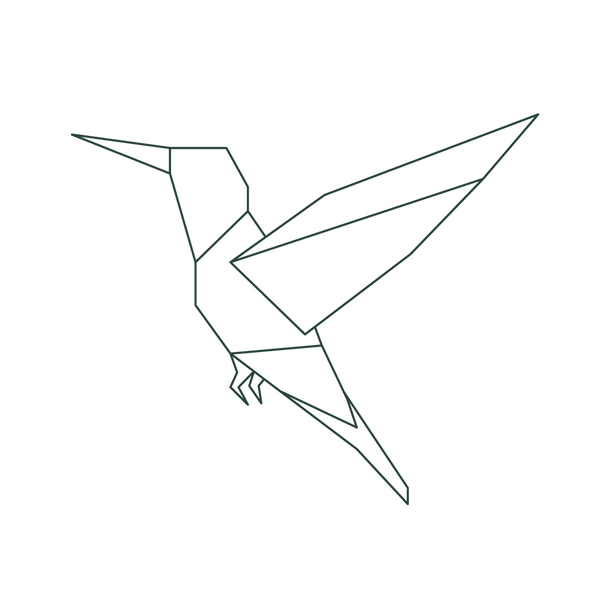

Essays, poems, and reflections on psychology,
cognitive neuroscience, and what it means to be human.
Questions are often more interesting than answers.
This is not a portfolio. It is a lifelong attempt to document what it means to think, feel, and exist. Here you will find essays that sprawl, poems that compress, research notes that connect, and questions that refuse to resolve.
A story, not a résumé.
After spending years preparing for NEET, I chose to pivot toward psychology — not because it was a backup plan, but because I became increasingly fascinated by the human mind and behavior. The question that wouldn't leave me alone was not how the body works, but why we think, feel, and act the way we do.
I am currently pursuing a B.Sc. in Psychology and hope to specialize in Cognitive Neuroscience in the future. My interest lies at the intersection of science and meaning — in the strange gap between what the brain does and what it feels like to be the brain doing it.
This website, Beautifully Unwell, is my attempt to document that inquiry publicly — through essays, poems, research notes, and video essays. It is a lifelong project.

Maybe it is the layers that make you — you.
Philosophical and psychological explorations that don't rush to conclusions.
Not finished articles. An intellectual notebook — thinking out loud.
Slower. More intimate. Written in the margins of thinking.
You hate being touched yet your love language is physical touch. You don't wanna be alone yet you turn down almost every plan...
To wear the fool's cap with a solemn grace, and speak only what the heart cannot unsay...
I am not living — just killing time, counting breaths that whisper your name...
Love is not the heat of a moment, not the reckless language of bodies, not the long nights of talking until the sun leaks through...
I hope to be like a calm lake that reflects your kindness and beauty beneath the moonlit sky...
The act of love is not the grand gestures we rehearse, but the quiet choosing — again, and again...
Being stupid in love is knowing the truth and choosing you anyway. It's hearing reason knock softly and pretending I didn't hear...
A question without edges, hovering between breath and thought. It unfolds slowly, not as answers, but as moments...
I like being a mere thought that crosses your mind. For long, I desired too much — to be in your heart instead...
What if it last forever — not a promise whispered in the dark, but a choice we keep making even when it's hard...
I have a sword to protect you but no crown to have you. I walk where shadows learn my name while light was always meant for you...
We fell into an easy rhythm, hearts syncing without trying, like two soft flames leaning closer, learning how to glow together...
Even a rose must be let go if its thorns draw blood. You don't hold onto what hurts you, only to be cut little by little...
She decided to share her secrets with him. He decided to share his life with her. He was home for her. She was the world for him...
Sometimes it's just easier to give up, to stop pretending strength is something I still have...
Forbidden from the beginning? Or did we meet at the right time in the wrong universe...
Essays on minds, memories, and the strange experience of being alive.
Video essays on psychology, cognitive neuroscience, and what it means to be human. Check back soon.
The books that have shaped how I think about mind, behavior, and existence.
A growing collection of research notes and reflections.
"Conversation is one way we discover ourselves."
I'm always glad to hear from people who are curious about the same things — mind, meaning, consciousness, the strange fact of being alive. Whether you want to discuss an essay, share a book recommendation, or just say something that needed to be said: write to me.